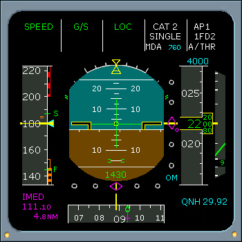

Approach Capabilities
CAT 1 or 2
When an ILS approach is selected from the MCDU data base, ILS or LS button and the APPR button are pushed, then the approach capability is displayed on line 1 and 2.
If CAT 1 SINGLE or CAT 2 SINGLE annunciations are displayed, then the airplane is capable of a CAT I non-autoland ILS approach (autopilot connected).
CAT 1 annunciation is displayed during an ILS approach and when the autopilot is disconnected.
|  |